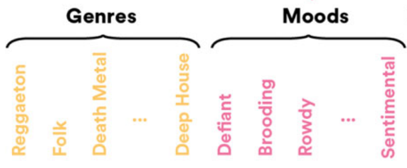
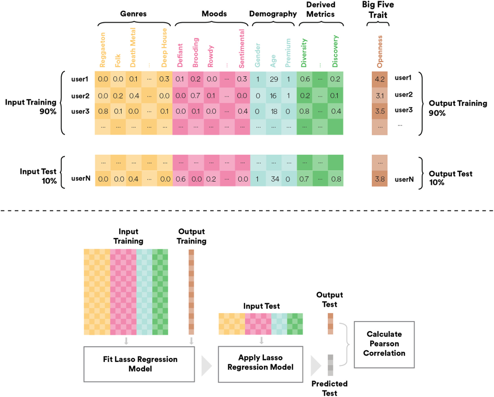
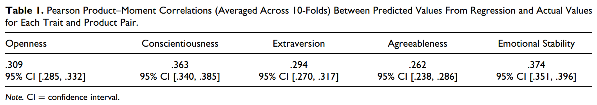
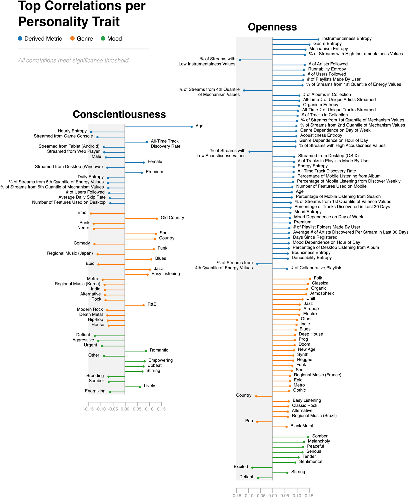
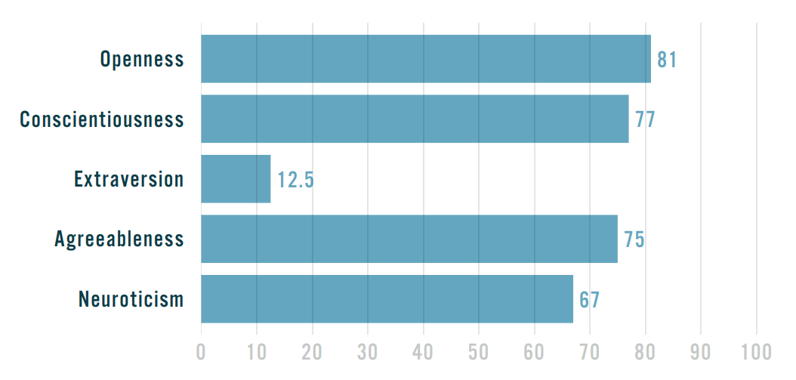
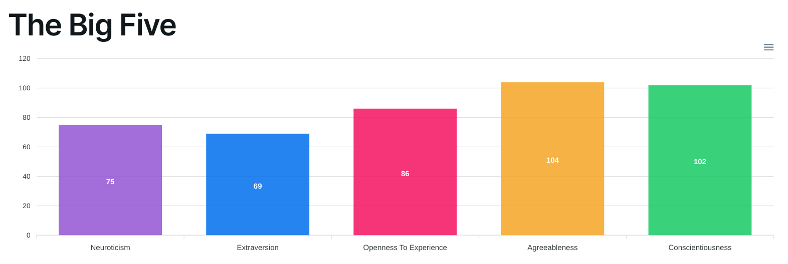

The Psychology of Music Preference
Why do we like the music we like?
Introduction & Motivation
It intrigues me to think about why we like the music we like - how much does our music preference have to do with our personality?
Those who know me know that I am a music fanatic. My music taste has evolved dramatically over the past several years - in the past, I enjoyed pop and electronic dance music (EDM), but now, I almost exclusively listen to heavier music, including genres like pop punk, hard rock, and metalcore. In fact, I used to think it was impossible for anyone to actually enjoy songs where the artist is yelling or screaming at the top of their lungs, but such songs are now a focal (and highly enjoyable) part of my music taste (case in point: ARTIFICIAL SUICIDE by Bad Omens, which I listened to 650+ times in the past 6 months alone). I wonder what factors are behind this shift, as well as what this says about how my personality has evolved over the years.
The Link between Music Preference and Personality
Many studies have found that there is indeed a connection (to some extent) between one’s music preferences and their personality traits. Several of these studies have yielded findings in support of interactionist theories, wherein people seek social contexts that provide them with self-confirmatory feedback (Swann Jr., Rentfrow, and Guinn 2003). As in, people intentionally select musical environments that reflect their psychological traits and needs.
Anderson et al. (2021) conducted a study that aimed to gauge whether the Big Five personality traits could be predicted by music preference and music listening habits through machine learning.
The Big Five Personality Traits
The Big Five personality traits are a group of five key dimensions of personality, outlined by the Five Factor Model, that provide a comprehensive framework for understanding and summarizing human personality (Roccas et al. 2002). These traits are generally measured using self-report questionnaires, where respondants rate their agreement with various statements through a Likert scale.
The traits as described by John and Srivastava (1999):
- Openness to experience: one’s willingness to try new things, and to engage in imaginative or intellectual activities. Those who score high in openness tend to be creative, intellectually curious, and open to new experiences, while low-scorers generally prefer routine and are uncomfortable with change.
- Conscienciousness: one’s desire to take obligations and tasks seriously. This personality trait is defined by high levels of thoughtfulness, responsibility, and goal-oriented behaviours. Those who score high in conscientiousness are usually considerate, self-disciplined, goal-oriented, and have good impulse control, whereas low-scorers struggle to complete tasks due to poor impulse control.
- Extraversion: one’s tendency to seek (usually social) interaction with their environment. This manifests in outgoing, energetic, and talkative behaviours. Those high in extraversion (i.e., are extroverts) are sociable and are energized by social interaction, whereas those low in extraversion (i.e., are introverts) are reserved, reflective, happy in solitude, and may feel fatigued from social interaction.
- Agreeableness: one’s tendency to act in a cooperative, unselfish manner. Highly agreeable people are sensitive to the needs of others, and are described as trustworthy, sympathetic, and considerate. Those low in agreeableness may be perceived as competitive, uncooperative, and even manipulative.
- Neuroticism: describes one’s emotional stability - it takes into account how likely a person is to interpret events as threatening or difficult, as well as one’s propensity for negative emotions. Those scoring high in neuroticism tend to be lower in self-esteem and more anxious and irritable, while those low in neuroticism are calm, secure, resilient, and self-satisfied.
This study involved over 17.6 million streams (662,000 hours of music) listened to by 5,808 users on Spotify over a 3-month period. Information about user demography, musical preferences, and listening habits were collected to use as input to the machine learning model.
The input features are described as follows:
- Genre and mood vectors: Each users’ listening data was mapped to two vectors: genre and mood vectors. Spotify generates its genre labels internally, using a combination of aggregated listening patterns (clusters of user behavior), audio features, and cultural knowledge. To produce the mood vectors, the researchers used a third-party service called Gracenote, which analyzes the audio signals of each song - features like rhythm and harmony - and uses a classifier to assign a mood label to the track. 66 Spotify genres and 25 Gracenote moods were represented across all study participants. Each users’ streams were mapped to these genres and moods, and then aggregated and normalized to get the percentage of listening from each genre or mood.
Each user ends up with a length 66 genre vector, and a length 25 mood vector, where each element in either vector indicates the percentage of that user’s listening data attributed to each genre or mood. E.g., say my genre vector looked something like [0.63, 0.24, 0.04, 0.09, 0, … 0], where the corresponding genres are [metalcore, pop punk, pop, rap, <everything else>].

- Derived metrics: Features were constructed using data provided by Spotify that describes user behaviour on the platform. These features included simpler ones such as the user’s type of device (e.g., Mac, game console) and number of playlists, as well as computed features that descibe four aspects of user listening behaviour, namely:
- Discovery: indicates how open a user is to exploring new music. When considering the first time a user listens to a song as when they “discovered” the song, researchers computed users’ historical discovery rate (total number of unique songs / total number of streams) and windowed discovery rate (the percentage of new songs across listening in the last 30 days). However, discovery rate is not consistent - people tend to have periods of discovery interspersed amongst periods of low discovery (i.e., listening to familiar songs). So, researchers also calculated the historical spread of the windowed discovery rate (how much variation there is in a user’s discovery rate over time), as well as the difference between the current and historical rates of discovery.
- Diversity: a quantification of how diverse a user’s music taste is. This was computed by projecting songs into multidimensional space based on co-occurrences in other user-generated playlists. Songs that are often added together in playlists are closer to each other, while songs that don’t often co-occur have more distance between them. If a user listens to songs that are far apart in this space, this indicates that their music taste is more diverse. The researchers measured aggregate diversity (aggregate distance the user has traversed in the space) and sequential diversity (the average distance between one song and the next) over daily and monthly windows. Standard deviation of the daily windows was also measured to indicate how each user’s diversity changes from day to day.
- Contextual listening and audio features: determines what a user’s typical audio fingerprint is, and whether it changes based on context. For example, someone may listen to jazz on weekdays and metal on weekends. A measure called the Shannon Entropy was computed to descibe how each user distributes their listening across different contents (genre, mood, or audio attributes) or contexts (time of day or week).
- Nostalgia: denotes a user’s tendency to listen to music representative of their formative years. A metric was computed to describe for each user how much they listen to music that is characteristic of and relevant to their generation.
- Product flag: Spotify has a free version and a Premium version, where the free tier is available without charge but comes with restrictions such as no on-demand streaming and limited numbers of skips. The Premium version gives users unlimited access to their music. These differences impact how the user engages with Spotify, so this feature indicates whether each user has Spotify for free or Spotify Premium.
The target variables for this study were the Big Five personality Traits, which were measured for each participant via the Big Five Inventory, a 44-item (Likert-style) questionnaire that measures the five traits.
The goal of the machine learning model was to independently predict numerical values of each of the Big Five personality traits, given a user’s features. Model selection was done with consideration of the concern of overfitting caused by the large number of features (there were 211, including all genre, mood, demographic, and derived features). Using regularized methods is a common means of addressing overfitting - it does so by penalizing the model coefficients that cause the overfitting (more technically, by adding a penalty term to the loss function, which ultimately punishes overly complex models).
Lasso and Ridge Regression
- L1 or lasso regression adds the sum of the absolute values of the coefficients to the cost function, which can shrink some coefficients to exactly zero, essentially excluding less important features (feature selection).
- L2 or ridge regression adds the sum of the square of each coefficient to the cost function, which encourages the model to keep coefficients small while not completely eliminating them. Ridge regularization is especially useful when features are correlated, because it distributes their influence across the features.
Researchers in this study chose elastic net regularization regression, which combines the strengths of lasso and ridge regression to address datasets with large numbers of features while also outperforming lasso and ridge regression individually (Zou and Hastie 2005). Additionally, random forest regression was also used to account for potentially nonlinear relationships between predictors, such as differences in personality traits amongst Spotify Free and Premium users.
For each model, 10-fold cross-validation in which all variable selection and parameter tuning was done within each training set independently, was used to ensure robust results. Prediction accuracy was measured by computing the Pearson correlation coefficient between the predicted values (for each personality trait) and the actual measured values for the test group of each fold. The final reported results are the average correlations across each fold.

The results that each of the Big Five traits are predicted by musical preferences and habitual listening behaviours with moderate to high accuracy. Conscienciousness and emotional stabilty (opposite of neuroticism) were found to be the two most predictable traits. The Pearson correlation coefficients are shown in the below table.

There were several interesting correlations between personality traits and certain genres or moods:
- Openness: positively correlated with Atmospheric, Folk, Reggae, or Afropop, which are less popular genres, as well as “sentimental” or “melancholy” music
- Emotional stability: positively correlated with Blues, Old Country, Soul, and “lively” music, and negatively correlated with Indie, Emo, and Regional Music from Korea, as well as with “brooding” (e.g., Take Care by Drake; Karma Police by Radiohead) or “Defiant” music (e.g., Mask Off by Future and 3005 by Childish Gambino).
- Agreeableness: positively correlated with Jazz, Soul, and “sophisticated” music (e.g., Fly Me to the Moon by Frank Sinatra), and negatively correlated with Punk, Death metal, or other “aggressive” music.
- Conscientiousness: positively correlated with Funk, Easy Listening, or “Romantic” music (e.g., La Vie en Rose by Edith Piaf), and negatively correlated with Rock, Comedy, and Alternative genres, as well as with “Energizing” (e.g., Happy by Pharrell Williams) and “Excited” (e.g., California Gurls by Katy Perry) moods.
- Extraversion: positively correlated with Funk, Reggaeton, or “sensual” music (e.g., Same Old Love by Selena Gomez), and negatively correlated with Rock, Metal, and “urgent” music (e.g., Locked Out of Heaven by Bruno Mars; Cheap Thrills by Sia)
There were also correlations between the derived metrics and personality traits:
- Emotional stability correlated negatively with average skip rate, indicating that those who were more neurotic tended to be more selective of what they listened to at any given moment.
- Openness correlated positively with all-time track discovery rate and genre entropy, indicating predictably that high scorers in Openness are more willing to explore new music and different types of music.
- Those scoring high in Conscienciousness tended to concentrate their listening to a narrow window of time in the day across multiple weeks, indicating they structure teir day more rigidly than lower scorers.
- Those high in Extraversion tended to listen more from others’ playlists, which can have many possible explanations. For example, they may be more reliant on their social networks’ music suggestions, or they may prefer to discover new music based on their friend group.
- Those who listened to more Spotify-suggested music tended to score higher in Agreeableness or Conscientiousness.
 
Conclusion & Insights (self-study)
I decided to take the Big Five personality test so I could see if the paper’s findings generally align with what I know about myself. I took the online test from Truity (link here) and another from bigfive-web (link here) for cross-validation purposes. The former was 50 questions, while the latter was 120 (questions were more detailed).
Here are my results from Truity (100-scale):

And here are my results from bigfive-web (120-scale):

In summary from bigfive-web, I score high in all categories except for Extraversion. This is in agreement with the Truity scores, though perhaps a bit less extreme. I’m more willing to trust the bigfive-web results, since the questions were more detailed and I do think I put more thought into them. However, the questionnaire used in the study had less than 50 questions, so in terms of reliability and consistency, I’ll still keep the Truity scores in mind.
bigfive-web also gives detailed breakdowns of individual aspects of each personality trait and how I score in them. You can review that by downloading the PDF here.
Here’s how I align (or don’t align) with the study findings. Quick note that the study uses Emotional Stability instead of Neuroticism, and high Neuroticism (me) = low Emotional Stability:
- Openness (high):
- Positive correlation with genre entropy (aligns): I think I’d agree with this. Although I listen mostly to metalcore, rock, and pop punk, I mix in some rap / hip-hop and pop. I like the occasional Joyner Lucas and Pop Smoke to hype me up before big events and also the classic pop “white girl bangers” (Katy Perry, Kesha) in the car on the way to the gym. Jazz shows up at times as well when I’m practicing saxophone or just chilling.
- Positive correlation with # of playlists made by user (aligns): I have over 140 playlists - I think that’s a lot. They denote different genres, artists, moods, or feelings for me, and I love making them.
- Positive correlation with all time # of unique tracks and artists (aligns): I imagine these numbers are pretty high, but I’m not sure what is considered “high” in the study. I’ve streamed over 1.5K unique songs from 400-500 unique artists each year from 2022 to 2024 (numbers from lastfm).
- Positive correlation with “melancholy,” “somber,” “peaceful” moods (does not align): I don’t think I listen to a lot songs with these moods. “Peaceful” maybe, due to my study music (Novo Amor, Portair).
- Conscienciousness (high):
- Positive correlations with Country, Blues, Soul, and Funk genres, and negative correlations with Rock, Alternative, and any “aggressive” music (does not align): I appear to be inversely correlated to those trends.
- Agreeableness (high):
- Positive correlations with Jazz, Soul, Funk genres and “romantic” and “sentimental” moods, and negative correlations with Punk, Emo, Metal, Alternative, and Rock genres, as well as any “aggressive” music (does not align): same as with Conscienciousness - I clearly don’t align much here.
- Emotional stability (low):
- Negative correlations with Emo, Punk, Modern Rock, Indie, Alternative, and Rock genres (aligns): yeah this describes my music taste pretty well.
- Extraversion (low):
- Positive correlation with % of mobile listening from others’ playlists (aligns): I pretty much only listen to my own playlists.
- Negative correlation with Punk, Rock, Gothic, Emo, Death Metal, Metal, Alternative, Modern Rock, and “aggressive” music (aligns): funny how introverted people like loud music. This aligns very well with my taste.
To conclude, there are lots of fascinating trends and patterns revealed by Anderson et al. (2021). While I resonate with several, there are obviously many where I don’t align, which makes sense, because human behaviour is difficult to generalize. I do find it very interesting how louder, aggressive music (much of my current music taste) can predict higher Neuroticism and lower Extraversion - I wonder why that is, and it may be worthy of a future deep dive. There are also lots of other factors not directly related to personality that can influence music preference, such as culture, age, and situational factors, that can be further explored.
To answer my intial question of whether changes in my personality helped drive my changes in music taste, I’m not sure I can draw any sort of conclusions on that. I’ve absolutely become more open-minded over the years, which is what drew me to listen to new music in the first place, hence helping me realize I really like metalcore and aggressive music. I believe I’ve become more emotionally secure and extraverted over time as well, which, based on the study, might push me away from louder music. However, introvertedness and neuroticism does run in the family, and it’s likely not something I can change in myself for good, so perhaps I always would have liked the music I like now, if I’d been open enough back then to discover it.